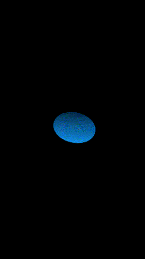
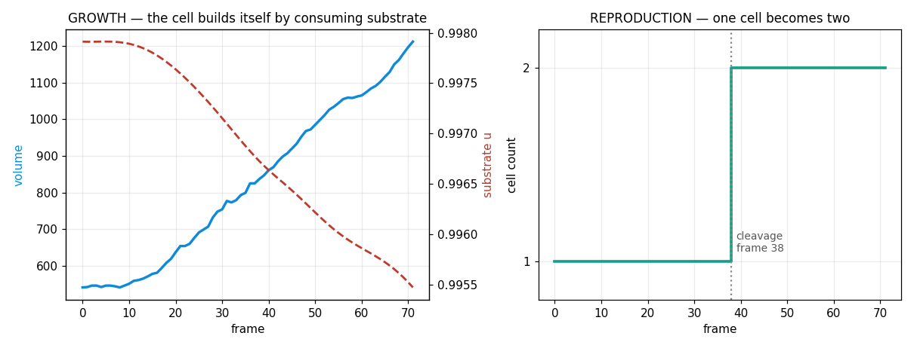

SEM · live · scanning-microscope mode
The SEM, now Unreal 5.8 powered
The old SEM mode depth-shaded the cell’s height field through sepia
“bone” LUTs. This one renders the same renderHeight() field
through the Unreal 5.8 membrane look — cyan Fresnel rim, deep-blue subsurface,
granular interior. Switch materials to compare the new instrument to the classic micrograph.
Self-replicating regime: spots grow, elongate, and split — the 2D shadow of the 3D cleavage above.
evidence · two signatures of life
It grows. It reproduces.
Measured from the deterministic 3D simulation behind the hero — not styling. The cell builds its own mass out of the medium (metabolism) and divides one into two (reproduction).


u depletes; cell count steps 1→2 at frame 38.backend · Unreal Engine 5.8
From chemistry to cinema
The hero is produced by a four-stage pipeline. The science bridge runs anywhere; the render runs on a UE 5.8 + GPU workstation.
- 01export_mesh.py
3D Gray–Scott → marching-cubes OBJ sequence of the cleaving cell.
science bridge · runs anywhere - 02import + build_scene
Translucent membrane material, microscope mask, dark-field, scan-sweep.
UE 5.8 - 03make_sequence
Push-in camera + per-frame reveal so the cell cleaves on screen.
UE 5.8 - 04render → mux
Movie Render Queue → vertical 1080×1920 / 24fps → viral_cut.
UE 5.8 · GPU
Render bridge
offline · stubweb9 is wired to drive the pipeline through a render API. Point it at a server wrapping
export_mesh.py + the UE scripts and it will dispatch jobs and poll status.
Without a server it runs in simulate mode so you can see the contract.
› ready. dispatch to see the POST /render contract.
why it matters
A new instrument for the origin of life
The hardest stage of biology to study is the first one — the moment before there were cells, when plain chemistry first began to keep itself going and copy itself. There is no fossil of that transition. Turing (1952) and Pearson (1993) argued that reaction–diffusion systems could self-organise into growing, dividing forms with no genetic machinery at all.
web9 turns that argument into something you can watch, measure, and render. Because the simulation is deterministic, every protocell is reproducible to the bit — the same seed gives the same cell, the same division, every time. That makes it an instrument: a place to ask what minimal chemistry is enough to look alive, and to put the answer on screen at a fidelity that communicates it to anyone.
Deterministic chemistry in. A dividing cell out. No genes required.